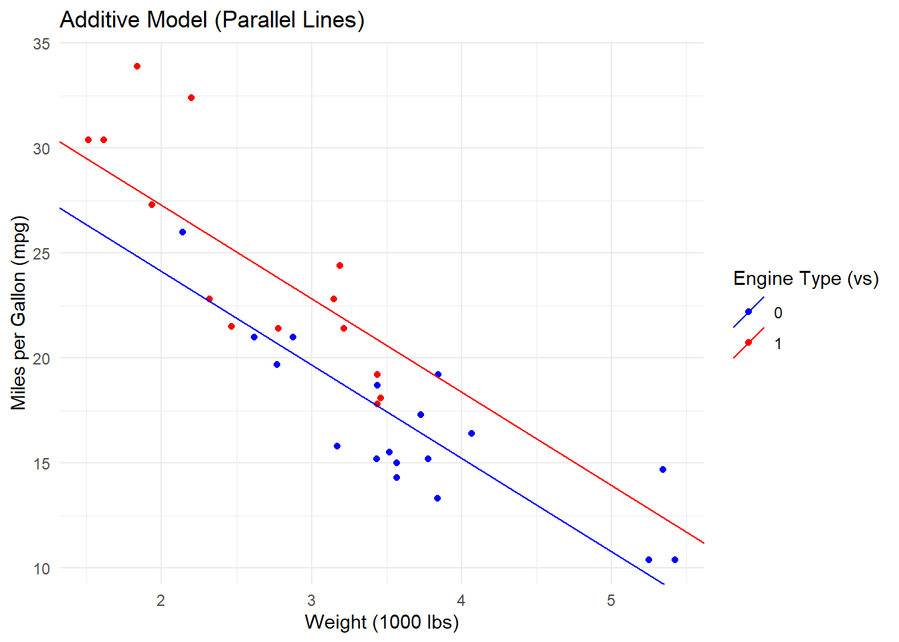
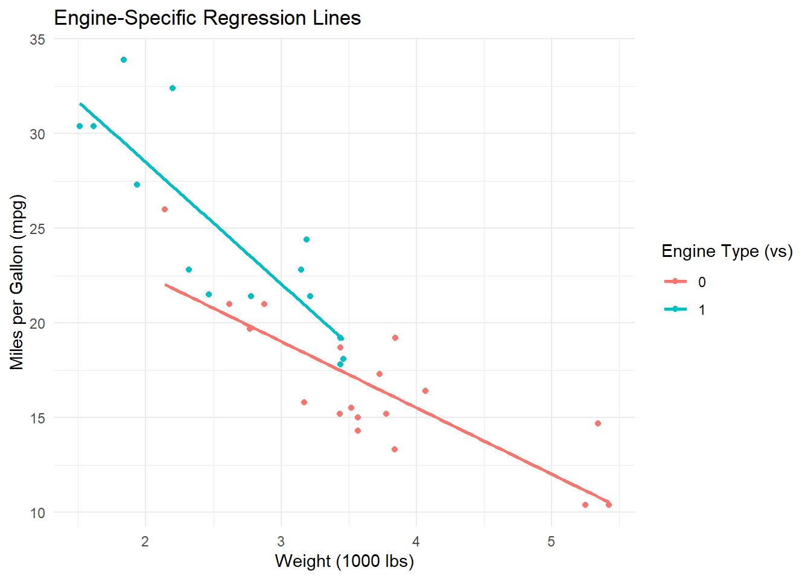
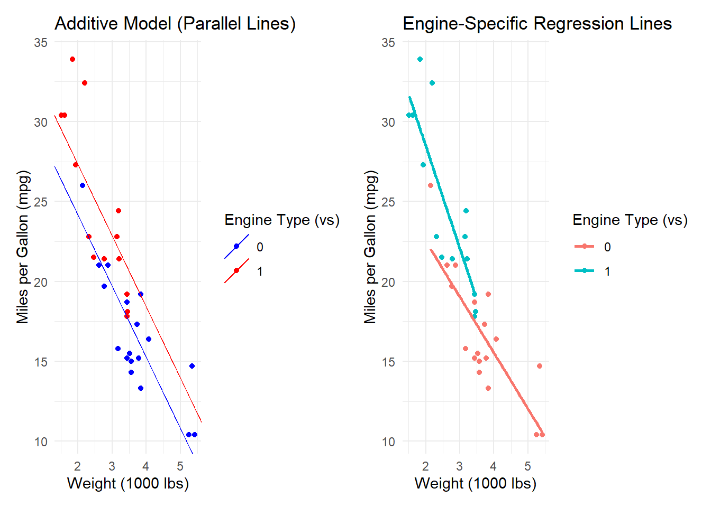
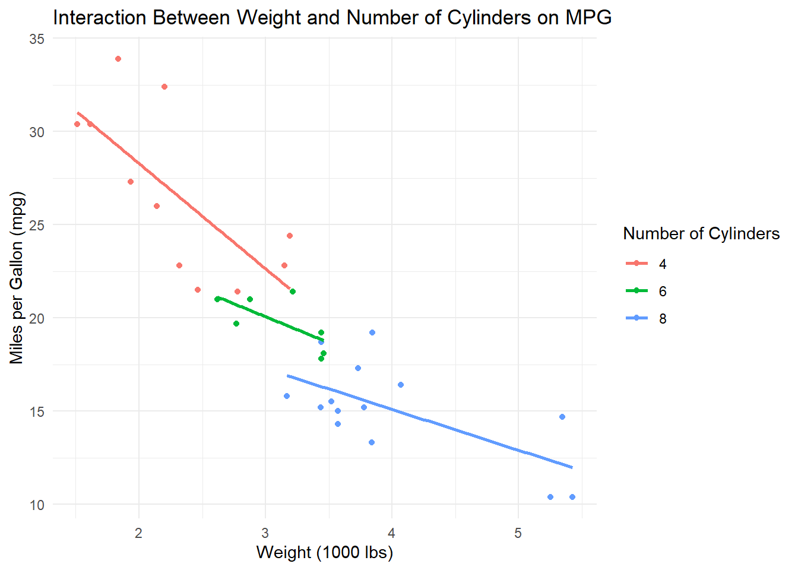
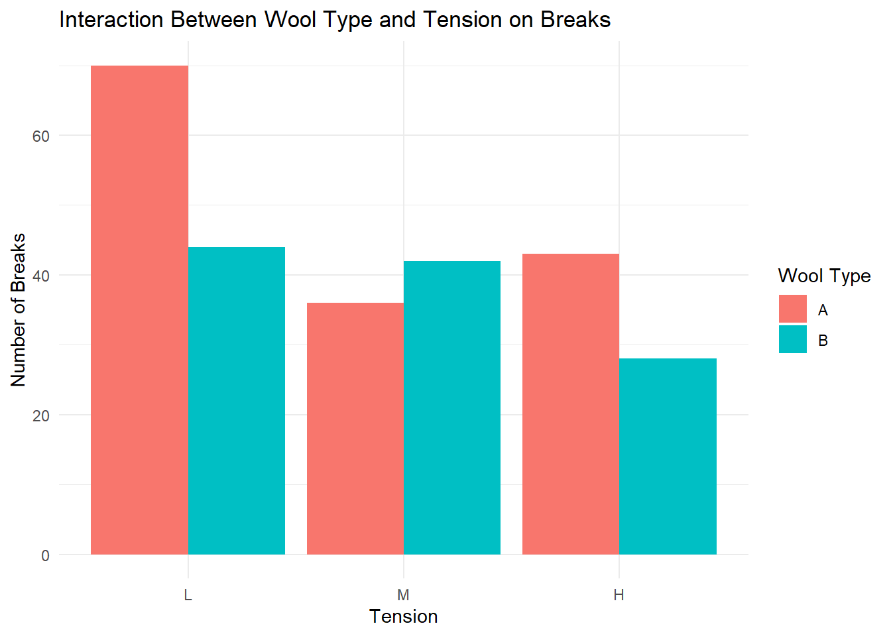
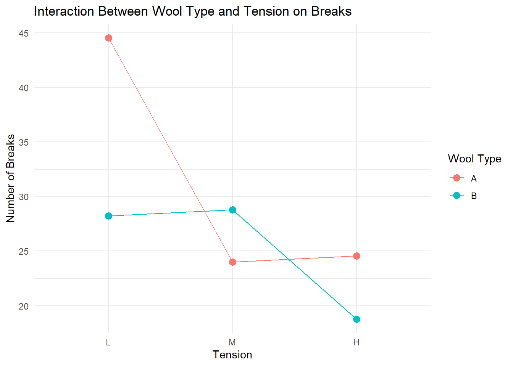
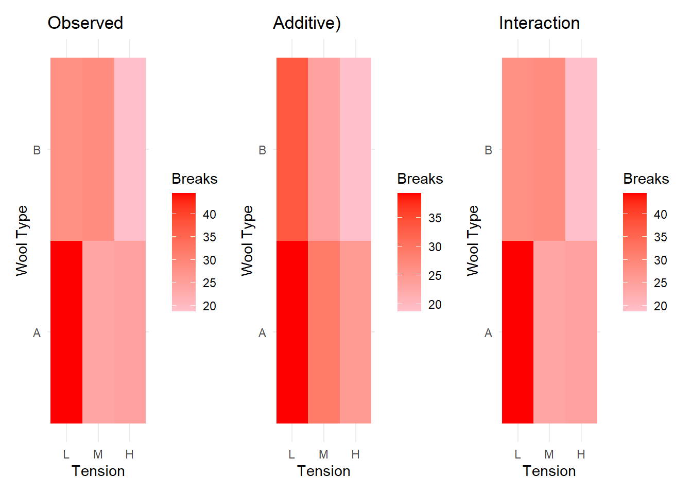

Lec 13: Multiple Linear Regression - Interactions
1 Review
1.1 Review: Lecture 01-06
- Lectures 01-06: SLR: least squares estimate, inference (CI, prediction, t-test, F-test), diagnostics, transformations, ANOVA, lack of fit test.
- Lectures 07-11: Multiple Linear Regression (MLR).
- Lecture 11: multicollinearity
- Lecture 12: categorical predictors
- This lecture focuses on interactions
1.2 Review of Lecture 12
- We showed how do categorical predictor variables work in linear regression models.
- We showed the mathematical representation of categorical predictor variables using dummy variables.
- The mathematical representation helps us understand how the regression model handles categorical predictors; it shows the inner workings of the model.
- In R or other software, the process is done automatically when fitting the model.
1.3 Review of Lecture 12
- The different ways to represent categorical predictors (reference category, no intercept, effect coding) lead to different interpretations of the coefficients, but they all model the same underlying relationships in the data.
- We shown two methods to change the default reference category in R:
relevelfunction andcontrastsfunction. - For the GrowthPlants example, what is your favorite way to represent the categorical predictor variable ‘group’?
- Lastly, the overall effect of a categorical predictor variable can be tested using the ANOVA F-test.
2 Additive Model
2.1 Additive Effects Model
- Consider the following model \[y = \beta_0 + \beta_1 x_1 + \beta_2 x_2 + \epsilon\]
- This model assumes: \(E[y]=\beta_0 + \beta_1 x_1 + \beta_2 x_2\)
- holding \(x_2\) constant, a one-unit \(\uparrow\) in \(x_1\) is associated with a \(\beta_1\) change in the mean of \(y\).
- holding \(x_1\) constant, a one-unit \(\uparrow\) in \(x_2\) is associated with a \(\beta_2\) change in the mean of \(y\).
- the combine effect of a one-unit \(\uparrow\) in both \(x_1\) and \(x_2\) is \(\beta_1 + \beta_2\).
- The effect of \(x_1\) on \(y\) does {OT} depend on the value of \(x_2\), and vice versa.
- This is called an additive effects model.
2.2 mtcars Example: Additive Model
For
mtcars, ‘mpg’: the response variable, predictor 1: ‘wt’ (continuous), predictor 2: ‘vs’ (categorical).We have fit in Lecture 12 is the following model \[E[\text{mpg} ] = \beta_0 + \beta_1 \cdot wt + \beta_2 \cdot vs\]
The regression functions are
- For V-shaped engine (vs=0): \(E[\text{mpg} | \text{wt}=wt, {\color{red}\text{vs}=0}] = \beta_0 + \beta_1 \cdot wt\)
- For straight engine (vs=1): \(E[\text{mpg} | \text{wt}=wt, {\color{red}\text{vs}=1}] = (\beta_0 + {\color{red}\beta_2}) + \beta_1 \cdot wt\)
2.3 The Fitted Additive Model:
summary(lm_mlr)$coefficients
Coefficients:
Estimate Std. Error t value Pr(>|t|)
(Intercept) 33.0042 2.3554 14.012 1.92e-14 ***
wt -4.4428 0.6134 -7.243 5.63e-08 ***
vs 3.1544 1.1907 2.649 0.0129 * \[\widehat{mpg}_{wt, vs}= 33 - 4.44 wt + 3.15 vs\]
2.4 Interpret the Fitted Additive Model
33.00 the estimated mean mpg when wt=0 and vs=0 (V-shaped engin) because \(\widehat{mpg}_{wt=0, vs=0} = 33.00\). This is practically not interesting. Why?
vs=0 (V-shaped): \[\widehat{mpg}_{wt, vs}= 33 - {\color{blue}4.44} wt\]
vs=1 (straight): \[\widehat{mpg}_{wt, vs}= (33 + {\color{red}3.15}) - 4.44 wt = 36.15 - {\color{blue}4.44} wt\]
The two fitted lines are because they have the same slope (-4.44).
2.5 Interpret Coefficients of An Additive Model
The coefficient of vs: \[\widehat{mpg}_{wt=wt, {\color{red}vs=1}} -\widehat{mpg}_{wt=wt, {\color{red}vs=0}} = 3.15\]
Interpretation: holding
wtconstant, the estimated mean mpg for straight engine (vs=1) is 3.15 higher than that for V-shaped engine (vs=0).The coefficient of wt: \[\widehat{mpg}_{wt=wt+{\color{red}1}, vs=vs} -\widehat{mpg}_{wt=wt, vs=vs} = -4.44\]
Interpretation: holding
vsconstant, a one-unit increase in wt is associated with a 4.44 decrease in the estimated mean mpg.
2.6 Visualization of Additive Model: Fitted Values vs wt and vs

2.7 Additive vs Interaction Effects Models
- In the additive model, we assume that the effect of
wtonmpgis the same for both engine types (no interaction effect).- The two fitted lines are parallel.
- Do we have evidence to support this assumption?
- If we suspect that the effect of wt on mpg differs by engine type, we can include an interaction term between wt and vs in the model.
3 Interaction Effects Model
3.1 Interaction Effects Model
Consider the following model \[y = \beta_0 + \beta_1 x_1 + \beta_2 x_2 + \beta_3 (x_1 \times x_2) + \epsilon\]
This model assumes that \[E[y]=\beta_0 + \beta_1 x_1 + \beta_2 x_2 + \beta_3 (x_1 \times x_2)\]
holding \(x_2\) constant, a one-unit \(\uparrow\) in \(x_1\) is associated with a \((\beta_1 + \beta_3 x_2)\) change in the mean of \(y\).
holding \(x_1\) constant, a one-unit \(\uparrow\) in \(x_2\) is associated with a \((\beta_2 + \beta_3 x_1)\) change in the mean of \(y\).
the combine effect of a one-unit \(\uparrow\) in both \(x_1\) and \(x_2\) is \(\beta_1 + \beta_2 + \beta_3\).
The effect of \(x_1\) on \(y\) depends on the value of \(x_2\), and vice versa.
This is called an interaction effects model.
3.2 mtcars Example: Interaction Effects Model
- We can fit a MLR model with an interaction term between ‘wt’ and ‘vs’:
Estimate Std. Error t value Pr(>|t|)
(Intercept) 29.531444 2.6220822 11.262593 6.550372e-12
wt -3.501310 0.6915244 -5.063177 2.333383e-05
vs 11.766696 3.7638472 3.126242 4.100885e-03
wt:vs -2.909707 1.2156850 -2.393471 2.363436e-02- The fitted model can be written as \[\widehat{\text{mpg} } = 29.53 - 3.50 \cdot wt + 11.77 \cdot vs - 2.91 \cdot (wt \times vs)\]
3.3 The Slopes Differ by Engine Type
- For V-shaped engine (vs=0): \[\widehat{\text{mpg} } = 29.53 - 3.50 \cdot wt\]
- For straight engine (vs=1): \[\widehat{\text{mpg} } = (29.53 + 11.77) + (-3.50 - 2.91) \cdot wt = 41.30 - 6.41 \cdot wt\]
- The two slopes are not the same:
- -3.50 (vs=0) vs
- -6.41 (vs=1) and
- the difference is -2.91 (=\(\hat\beta_3\)).
3.4 Test for Interaction Effect
- Are the two slopes significantly different?
- \(H_0: \beta_3 = 0\) (no interaction effect) vs
- \(H_a: \beta_3 \ne 0\) (interaction effect exists)
Estimate Std. Error t value Pr(>|t|)
wt:vs -2.909707 1.2156850 -2.393471 2.363436e-02- The p-value for the interaction term ‘wt:vs’ is 0.0236, significant at level 0.05.
3.5 Engine-Specific Regression Lines

3.6 Visualization of Two Models

3.7 Main Effects and Interaction Effects
Definitions:
- Main Effect: The effect of a predictor variable on the response variable, averaged over the levels of other predictor variables.
- Interaction Effect: The effect of one predictor variable on the response variable that depends on the level of another predictor variable.
In the presence of interaction terms, the interpretation of main effects changes. Avoid interpreting main effects independently when interactions are present.
It is generally recommended to include main effects when interaction terms are present in the model.
3.8 mtcars:
| Term | Interpretation (with interaction present) |
|---|---|
| (Intercept) | Predicted MPG for a car with wt = 0 and vs = 0 (i.e., a hypothetical V-engine car of zero weight). It’s a baseline intercept, not meaningful by itself but necessary for interpretation of other terms. |
| wt | Slope of MPG with respect to weight for V-shaped engines (vs = 0). MPG decreases by 3.50 for each additional 1000 lbs for V engines. |
| vs | Difference in intercept between straight and V engines when wt = 0. At zero weight, straight engines are predicted to have 11.77 higher MPG than V engines. (Interpret symbolically, since wt=0 is outside data range.) |
| wt:vs | Difference in the slope of weight between straight and V engines. For straight engines, the slope is 2.91 lower (more negative) than for V engines. So: slope = –3.50 – 2.91 = –6.41 for straight engines. |
4 F-tests
4.1 ANOVA Table for Interaction Model
The ANOVA table of the interaction model:
Analysis of Variance Table
Response: mpg
Df Sum Sq Mean Sq F value Pr(>F)
wt 1 847.73 847.73 127.5924 6.121e-12 ***
vs 1 54.23 54.23 8.1619 0.007978 **
wt:vs 1 38.06 38.06 5.7287 0.023634 *
Residuals 28 186.03 6.64
---
Signif. codes: 0 '***' 0.001 '**' 0.01 '*' 0.05 '.' 0.1 ' ' 14.2 F-tests for mtcars Example
Response: mpg
Df Sum Sq Mean Sq F value Pr(>F)
wt 1 847.73 847.73 127.5924 6.121e-12 ***
vs 1 54.23 54.23 8.1619 0.007978 **
wt:vs 1 38.06 38.06 5.7287 0.023634 *
Residuals 28 186.03 6.64 - Which F-tests can be conducted based on the ANOVA table?
- Interaction effect: \(H_0: \beta_3=0\) vs \(H_a: \beta_3 \ne 0\).
\[F=\frac{38.06/1}{186.03/28}=\frac{38.06}{6.64}=5.7287\]
Use the reference distribution (\(F_{1,28}\)), the p-value is 0.0236. Note that the result is the same as that of the t-table.
4.3 F-tests for mtcars Example
- Which F-tests can be conducted based on the ANOVA table?
- The overall effect of
vswhen the other predictor (wt) is in the model: \(H_0: \beta_2=\beta_3=0\) vs \(H_a:\) at least one of them is not zero. - The null hypothesis says that
vshas no effect onmpg, neither directly nor through interaction withwt.
\[F=\frac{(54.23+38.06)/2}{186.03/28}=\frac{46.145}{6.64}=6.949548\]
Use the reference distribution (\(F_{2,28}\)), the p-value is 0.0035.
4.4 Summary of F-tests in Interaction Model
- How about \(H_0: \beta_1=\beta_3=0\)?
- \(H_0\) says that
wthas no effect onmpg, neither directly nor through interaction withvs. - It is the overall effect of ‘wt’ when the other predictor (
vs) is in the model. - This cannot be tested based on the ANOVA table.
- We can switch the order and then construct an ANOVA table.
- We can also compare the full model (with interaction) with the reduced model with
vsonly in the model.
- \(H_0\) says that
4.5 Which Model as the Full Model?
- Should we use the additive model or the interaction model as the full model when examining the overall effect of ‘wt’?
- It depends on the research question.
- If we are interested in the overall effect of ‘wt’ regardless of engine type, we can use the additive model as the full model.
- If we are interested in the effect of ‘wt’ within each engine type, we should use the interaction model as the full model.
- If it is common for the effect of ‘wt’ to differ by engine type, the interaction model is more appropriate as the full model. Consider a situation when the slopes are very different, have opposite signs. What can happen?
5 More On Interactions
6 More than Two Levels
6.1 A Categorical Variable with More than Two Levels
- Consider the
mtcarsdata with ‘cyl’ (number of cylinders) as a categorical predictor with 3 levels (4, 6, 8). - Fit a MLR model with interaction between
wtandcyl:
Code
Estimate Std. Error t value Pr(>|t|)
(Intercept) 39.571196 3.193940 12.3894599 2.058359e-12
wt -5.647025 1.359498 -4.1537586 3.127578e-04
factor(cyl)6 -11.162351 9.355346 -1.1931522 2.435843e-01
factor(cyl)8 -15.703167 4.839464 -3.2448150 3.223216e-03
wt:factor(cyl)6 2.866919 3.117330 0.9196716 3.661987e-01
wt:factor(cyl)8 3.454587 1.627261 2.1229458 4.344037e-02- The fitted model can be written as \[\widehat{mpg} = \beta_0 + \beta_1 \cdot wt + \beta_2 \cdot \text{cyl6} + \beta_3 \cdot \text{cyl8} + \beta_4 \cdot (wt \times \text{cyl6}) + \beta_5 \cdot (wt \times \text{cyl8})\]
6.2 Visualization of Interaction Between Continuous and Categorical Variables

6.3 Interpretation of Interaction Between Continuous and Categorical Variables
- The interaction terms indicate how the effect of
wtonmpgchanges depending on the number of cylinders. - For example, the coefficient of
wt:cyl6represents the difference in the effect ofwtonmpgfor 6-cylinder cars compared to 4-cylinder cars (the reference group). - Similarly, the coefficient of
wt:cyl8represents the difference in the effect ofwtonmpgfor 8-cylinder cars compared to 4-cylinder cars.
6.4 Interpret Coefficients of Interaction Model
The three regression lines - For 4-cylinder cars (reference group): \(cyl6=0\), \(cyl8=0\): \[\widehat{mpg} = 39.57 - 5.65 \cdot wt\] - For 6-cylinder cars: \(cyl6=1\), \(cyl8=0\): \[\widehat{mpg} = (39.57 - 4.26) + (-5.65 + 2.19) \cdot wt = 35.31 - 3.46 \cdot wt\] - For 8-cylinder cars: \(cyl6=0\), \(cyl8=1\): \[\widehat{mpg} = (39.57 - 7.31) + (-5.65 + 4.15) \cdot wt = 32.26 - 1.50 \cdot wt\]
6.5 Interaction between a Continuous and a Categorical Variable with more than 2 levels
Consider a model with a categorical predictor \(C\) with \(k\) levels, and a continuous predictor \(x\).
The interaction model can be written as \[y = \beta_0 + \gamma x + \sum_{j=1}^{k-1} \beta_j C_j + \sum_{j=1}^{k-1} \delta_{j} (x \times C_j) + \epsilon\] where \(C_j\) are dummy variables for the categorical predictor with the first level as the reference group.
The effect (slope) of \(x\) on \(y\) for the reference group (level \(k\) of \(C\)) is \(\gamma\).
The effect (slope) of \(x\) on \(y\) for level \(j\) of \(C\) is \(\gamma + \delta_j\) for \(j=1, \ldots, k-1\).
6.6 Test Interactions
- We can test whether the interaction effects are significant using an ANOVA table or by examining the p-values of the interaction terms in the regression output.
Analysis of Variance Table
Response: mpg
Df Sum Sq Mean Sq F value Pr(>F)
wt 1 847.73 847.73 141.3883 5.133e-12 ***
factor(cyl) 2 95.26 47.63 7.9443 0.00203 **
wt:factor(cyl) 2 27.17 13.58 2.2658 0.12386
Residuals 26 155.89 6.00
---
Signif. codes: 0 '***' 0.001 '**' 0.01 '*' 0.05 '.' 0.1 ' ' 1\(F=\frac{27.17/2}{155.89/26}=\frac{13.58}{6.00}=2.2658\)
The reference distribution is \(F_{2, 26}\) and the interaction is not significant at level 0.05.
7 Between Two Categorical Variables
7.1 Interaction Between Two Categorical Variables
- Example data:
warpbreaksdataset in R: the number of breaks in yarn during weaving- breaks: numeric response
- wool: 2 levels (A, B)
- tension: 3 levels (L, M, H)
7.2 Two Categorical Variables
- Does the following make sense? \[\widehat{breaks} = \hat \beta_0 + \hat \beta_1 \cdot \text{wool} + \hat \beta_2 \cdot \text{tension} + \hat \beta_3 \cdot \text{wool}*\text{tension}\]
7.3 Two Categorical Variables
Code
Estimate Std. Error t value Pr(>|t|)
(Intercept) 44.56 3.65 12.22 0.00
woolB -16.33 5.16 -3.17 0.00
tensionM -20.56 5.16 -3.99 0.00
tensionH -20.00 5.16 -3.88 0.00
woolB:tensionM 21.11 7.29 2.89 0.01
woolB:tensionH 10.56 7.29 1.45 0.15\[\widehat{breaks} = \hat \beta_0 + \hat \beta_1 \cdot \text{woolB} + \hat \beta_2 \cdot \text{tensionM} + \hat \beta_3 \cdot \text{tensionH} + \beta_4 \cdot (\text{woolB} \times \text{tensionM}) + \beta_5 \cdot (\text{woolB} \times \text{tensionH})\]
7.4 Means and Coefficients
How do we connect the means of each combination of wool and tension with the coefficients in the model?
\(\mu_{}{A,L} = E[breaks | wool=A, tension=L] = \beta_0\)
\(\mu_{}{A,M} = E[breaks | wool=A, tension=M] = \beta_0 + \beta_2\)
\(\mu_{}{A,H} = E[breaks | wool=A, tension=H] = \beta_0 + \beta_3\)
\(\mu_{}{B,L} = E[breaks | wool=B, tension=L] = \beta_0 + \beta_1\)
\(\mu_{}{B,M} = E[breaks | wool=B, tension=M] = \beta_0 + \beta_1 + \beta_2 + \beta_4\)
\(\mu_{}{B,H} = E[breaks | wool=B, tension=H] = \beta_0 + \beta_1 + \beta_3 + \beta_5\)
7.5 Two Categorical Variables
Estimate Std. Error t value Pr(>|t|)
(Intercept) 44.56 3.65 12.22 0.00
woolB -16.33 5.16 -3.17 0.00
tensionM -20.56 5.16 -3.99 0.00
tensionH -20.00 5.16 -3.88 0.00
woolB:tensionM 21.11 7.29 2.89 0.01
woolB:tensionH 10.56 7.29 1.45 0.15- How to interpret the interaction terms?
7.6 Two Categorical Variables
- What are the fitted values for each combination of wool and tension?
# Fitted values for each combination
fitted_A_L = 44.56
fitted_A_M = 44.56 - 20.56
fitted_A_H = 44.56 - 20.00
fitted_B_L = 44.56 - 16.33
fitted_B_M = 44.56 - 16.33 - 20.56 + 21.11
fitted_B_H = 44.56 - 16.33 - 20.00 + 10.56
# an easier way to find the means in R
aggregate(breaks ~ wool + tension, data = warpbreaks, FUN = mean)7.7 Visualization: Bar Plots

7.8 Visualization: Line Plots
- Interactions can also be examined by line plots of means

7.9 Visualization: heatmaps

7.10 Test Interaction Between Two Categorical Variables
Analysis of Variance Table
Response: breaks
Df Sum Sq Mean Sq F value Pr(>F)
wool 1 450.7 450.67 3.7653 0.0582130 .
tension 2 2034.3 1017.13 8.4980 0.0006926 ***
wool:tension 2 1002.8 501.39 4.1891 0.0210442 *
Residuals 48 5745.1 119.69
---
Signif. codes: 0 '***' 0.001 '**' 0.01 '*' 0.05 '.' 0.1 ' ' 1\[F=\frac{501.39}{119.59}=4.1891 \overset{H_0} \sim F_{df1, df2}\]
7.11 Test Interaction Between Two Categorical Variables
- Consider two categorical variables with \(I\) and \(J\) levels, respectively.
- How many coefficients do we estimated in the interaction model?
- 1 from the intercept
- \(I-1\) from the dummy variables of factor 1
- \(J-1\) from the dummy variables of factor 2
- \((I-1)*(J-1)\) from interaction terms.
- Total: \(IJ\) coefficients.
7.12 Two-way ANOVA
This is also known as a two-way ANOVA with interaction. Consider a balanced case: \[y_{ijk} = \mu + \alpha_i + \beta_j + (\alpha\beta)_{ij} + \epsilon_{ijk}\] where \(i=1, \ldots, I\); \(j=1, \ldots, J\); \(k=1, \ldots, K\).
Constraints are needed for identifiability:
\(\sum_{i=1}^I \alpha_i = 0\), \(I-1\) unique parameters. E.g., \[\alpha_1, \cdots, \alpha_{I-1}, \cancel{\alpha_I}\]
\(\sum_{j=1}^J \beta_j = 0\), \(J-1\) unique parameters. E.g., \[\beta_1, \cdots, \beta_{J-1}, \cancel{\beta_J}\]
7.13 Two-way ANOVA
Interaction terms
- \(\sum_{i=1}^I (\alpha\beta)_{ij} = 0\) for each \(j\)
- \(\sum_{j=1}^J (\alpha\beta)_{ij} = 0\) for each \(i\)
- Total \((I-1)(J-1)\) unique parameters. E.g.,
\[\begin{pmatrix} \delta_{11} & \delta_{12} & \cdots & \delta_{1,J-1} & \cancel{\delta_{1J}} \\ \delta_{21} & \delta_{22} & \cdots & \delta_{2,J-1} & \cancel{\delta_{2J}} \\ \cdots & \cdots & \cdots & \cdots & \cdots \\ \delta_{I-1,1} & \delta_{I-1,2} & \cdots & \delta_{I-1,J-1} & \cancel{\delta_{I-1,J}} \\ \cancel{\delta_{I1}} & \cancel{\delta_{I2}} & \cdots & \cancel{\delta_{I,J-1}} & \cancel{\delta_{IJ}} \end{pmatrix}\]
- The total number of parameters is \(1 + (I-1) + (J-1) + (I-1)(J-1) = IJ\), consistent with the linear regression.
<!– # Exit the R markdown